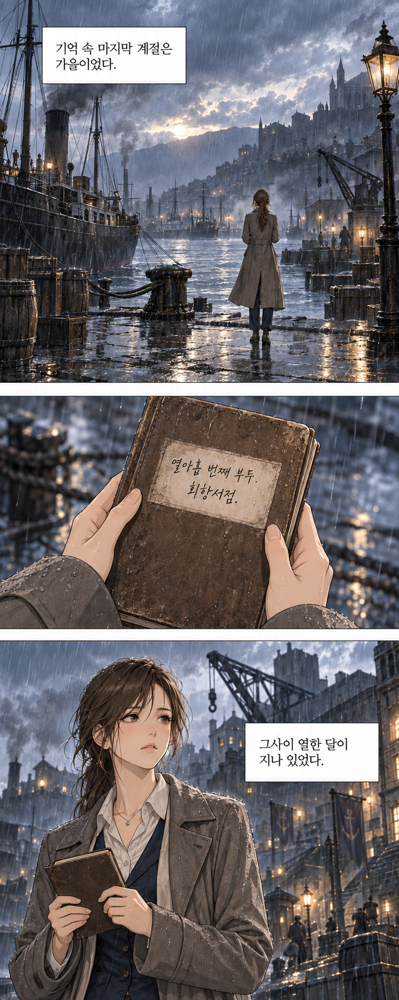

FANTASY · 회항서점
돌아온
사람들의 밤
살아 있는데, 내일 사망 처리된다는 통지가 왔다.
기억을 잃은 하윤, 자신을 아는 남자,
그리고 이름을 되찾아야 하는 사람들.
HAM MEDIA · FICTION
문장으로 읽고, 장면으로 만나는
HAM MEDIA의 소설과 웹툰.

FANTASY · 회항서점
살아 있는데, 내일 사망 처리된다는 통지가 왔다.
기억을 잃은 하윤, 자신을 아는 남자,
그리고 이름을 되찾아야 하는 사람들.